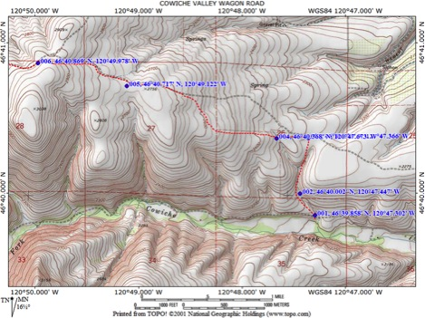

Cowiche Valley Wagon Road

Length: 3.45 miles
Beginning Elevation: 2,050 feet elevation
End Elevation: 2,900 feet elevation
Elevation Gain: 1,100 feet
Trailhead: 4.1 miles west of Summitview Avenue on Cowiche Mill Road. Park well off the road on this quiet byway (Waypoint 1) - WDFW Land, Discovery Pass Required
This segment of the William O Douglas Trail follows the historic Cowiche Valley Wagon Road up to the to Hatton Road, both historical routes, dating from the late 1800s. This hike makes a super day hike; the return trip totaling 6.9 miles.
1880 map showing historic Indian trail/wagon road along "Cowechee Creek":

William O. Douglas explored and wrote about this landscape:
"I do not envy those whose introduction to nature was lush meadows, lakes, and swamps where life abounds. The desert hills of Yakima had a poverty that sharpened perception. Even a minute violet quickens the heart when one has walked far or climbed high to find it. Where nature is more bountiful, even the tender bitterroot might go unnoticed. Yet when a lone plant is seen in bloom on scabland between batches of bunch grass and sage, it can transform the spot as completely as only a whole bank of flowers could do in a more lush environment. It is the old relationship between scarcity and value, one of the lessons which the foothills of Yakima taught me."
Bitterroot

Find the trailhead on the west side of a pronounced ravine along Cowiche Mill Road.
The wagon road track is grown over and vague for a short distance, then becomes more apparent as it wends its way up the ravine, sometimes in the bottom, at others on either sidehill. Along the talus flanking the ravine, listen for the distinct song of the rock wren (Waypoint 2), wedded to this habitat.
The ravine peters out and soon you see an east-west elk fence ahead (Waypoint 4). Go west along the track. At a steep dip, a dry rivulet, note rocky outcrops on the west side (Waypoint 4). A small clump of Lomatium columbiana occurs here. Look also for the Western Fence Lizard, a denizen of Cowiche Canyon Wagon Road talus.
Western Fence Lizard

Continue along the south side of the elk fence to a 90-degree corner. Make a turn to the right (north). Instead of following the elk fence north, the trail (former game trails) head off to the northwest to a 2-track about 1/3 mile ahead. Go left (west) again, following this track upwards through a mosaic of shrub-steppe habitats with dramatically different soil depths. Deeper soils are grown to Bitterbrush, Three-tip Sagebrush with a dense sward of bunchgrasses (Bluebunch Wheatgrass and Idaho Fescue). Lupines and Arrowleaved Balsamroot are common spring wildflowers on these deeper soils. A wide expanse of lithosols (Waypoint 5) along the way is enlivened in spring with a variety of biscuitroots, including numerous Canby’s, and a sparser cover of others such as: Geyers’s, nudicaule, and Nine-leaved. The tiny and rare Tauschia hooveri occurs in good numbers in places along the trail, best noted in April. The Horned Lark is the dominant songbird in this habitat. Its tinkling song coming from high in the sky provides a constant melody through the spring months. Everywhere along the trail during spring and early summer, listen for the flutings of the Western Meadowlark. Overhead, Turkey Vultures ply the sky, keeping a sharp eye (and nose) for any carrion lying about.
Tauschia hooveri

Western Meadowlark

Much of this hike traverses a landscape providing abundant winter range for both Mule Deer and Elk. Bitterbrush, especially, is favored as a browse species for both these ungulates. The Washington Department of Fish and Wildlife maintains a feeding station just to the south of Cowiche Creek South Fork.
Bitterbrush above Cowiche Valley

At 2,800 feet elevation, the trail again meets an elk fence. Keep west alongside this fence climbing to a saddle (2,900 feet elevation). This is a great spot to pause and take in the view around you. The Cascade Mountain east slopes loom just to the west. The westerly margin of the Shrub-steppe Zone is near at hand, meeting the lower edge of the Ponderosa Pine Zone just below you along the Hatton Road. To the north, seemingly close enough to reach out and touch, the commanding hulk of Clemans Mountain commands your attention. To the west, capped with a large communications tower, is Bethel Ridge. Southwest, through a tiny gap, is the fire lookout atop Jumpoff Ridge. Nearby to the southeast lies Cowiche Mountain, a prominent example of the Yakima Fold Belt. Downslope to the east lies the expansive apple and pear orchards west of Yakima, while off in the distance are Umtanum and Yakima Ridges, also within the Yakima Fold Belt. This vast area of shrub-steppe lies within the Yakima Training Center, a military installation.
From the saddle, continue along the fence line a few hundred yards to the Hatton Road (Waypoint 6). Here, return by the way you came, or go left (west) and begin Hatton Road Hike.

Waypoints
001 46°39.858' 120°47.302, elev 2059 Ft: Trailhead-west side of ravine
002 46°40.002' 120°47.447, elev 2122 Ft: Talus and rocky slopes
003 46°40.371' 120°47.366, elev 2282 Ft: Elk fence
004 46°40.368' 120°47.673, elev 2323 Ft: Gulch and streambed-dry
005 46°40.717' 120°49.122, elev 2751 Ft: Lithosols with tauschia hooveri
006 46°40.869' 120°49.978, elev 2919 Ft: Hatton Road at gatePlease RESPECT private property -- do not enter posted private land or cross exclusionary fences!